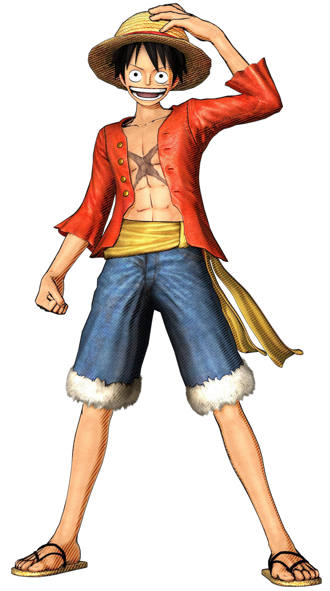
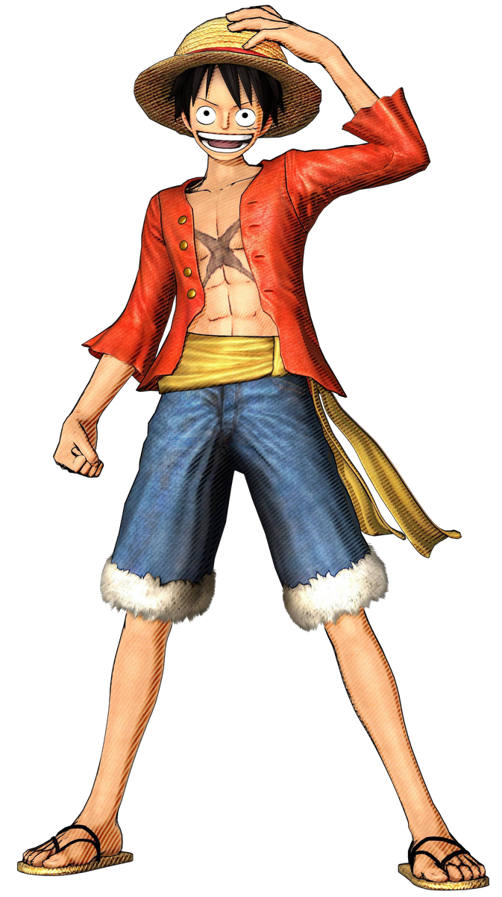

ANIME
Anime is a Japanese animation style that is produced or influenced by it. It is the Japanese term for
cartoon or animation where the Japanese use the word to describe all cartoons irrespective of the
nation. However, outside Japan, anime denotes animation movies that come exclusively from Japan,
distinguished by blazing graphics, energetic characters, and attractive themes such as sci-fi, romance,
and supernatural forces.Therefore, consider this syllogism: all anime shows are cartoons, but not all
cartoons are anime.
The art style connected with anime is distinct and easily identifiable. Large eyes, untamed hair,
lengthy arms and limbs, and other features are certainly known to you. This exaggerated design allows
the characters to convey their emotions more freely, which is plentiful in anime.
Technical animation methods like dramatic closeups and zooms, vivid lighting, and brilliant colors
contribute to the anime’s emotional atmosphere. However, beyond its unusual visual appearance, anime has
endeared itself to viewers; thanks to its nuanced characters and compelling plotlines.
ONE PIECE
1. "How Can We Look Any Of You In The Eyes And Say That Wano Is Safe With Us?"
- Kozuki Momonosuke
2. "You Want To Keep Everyone From Dying? That’s Naive. It’s War — People Die"
- Monkey D. Luffy
3. “When You Aim High, You Sometimes Come Across Fights Not Worth Fighting”
- Marshall 'Blackbeard' D. Teach
4. “When Do You Think People Die? When They Are Shot In The Heart With A Pistol? No. When They Are Ravaged By An Incurable Disease? No. When They Drink A Soup Made From Poisonous Mushrooms? No. It’s When... They Are Forgotten!”
- Dr. Hiriluk
5. "There is someone I must meet again. And until that day...not even death himself can take my life away."
- Roronoa Zoro
NARUTO
1. "Your Comrades Are There To Make Up For What You Cannot Do And To Prevent You From Ignoring Things That You Might Actually Have Been Able To Do."
- Itachi
2. "When People Get hurt, They Learn To Hate... But Knowing Pain Also Allows People To Be Kind. Pain Allows People To Grow, And How You Grow Is Up To You."
- Jiraiya
3. "It's Not The Face That Makes Someone A Monster, It's The Choices They Make In Their Lives."
- Naruto
4. "Those Who Forgive Themselves And Are Able To Accept Their True Nature... Those Are The Strong Ones!"
- Itachi
5. "If We're Going To Die Anyway, Then It's Better To Die Fighting Rather Than Doing Nothing!"
- Sakura
DEMON SLAYER
1. "Go further! If you're a man! If you call yourself a man! There's no other way to go but forward!"
- Sabito
2. "Don't ever give up…Even if it's painful, even if its agonizing, don't try to take the easy way out…"
- Zenitsu Agatsuma
3. “No matter how many people you may lose, you have no choice but to go on living. No matter how devastating the blows may be.”
- Tanjiro Kamado
4. "Both growing old and dying are part of the beauty of being an ephemeral creature like a human. The fact that we grow old and die is what makes human life so unbearably precious and noble."
- Kyojuro Rengoku
5. "If you can only do one a single thing, hone it to perfection. Hone it to the utmost limit!"
- Jigoro Kuwajima
DEATHNOTE
1. "This World Is Rotten And Those Who Are Making It Rot Deserve To Die. Someone Has To Do It, So Why Not Me?"
- Light
2. "When You Die, I'll Be The One Writing Your Name In My Death Note."
- Ryuk
3. "In All Things, One Cannot Win With Defense Alone. To Win, You Must Attack."
- Light
4. "In The End, There Is No Greater Motivation Than Revenge."
- Mello
5. "If You Can't Win The Game... If You Can't Solve The Puzzle, Then You're Nothing But A Loser."
- Near
JUJUTSU KAISEN
1. "I Don't Know How I'll Feel When I'm Dead, But I Don't Want To Regret The Way I Lived."
- Yuji Itadori
2. "It's Not About Whether I Can. I Have To Do It."
- Megumi Fushiguro
3. "What Makes Us Obligated To Meet Such Perfection Or Such Absurd Standards?"
- Nobara Kugisaki
4. "I Want More Good People To Enjoy Fairness, Even If Only A Few."
- Megumi Fushiguro
5. "Searching For Someone To Blame Is Such A Pain."
- Satoru Gojo